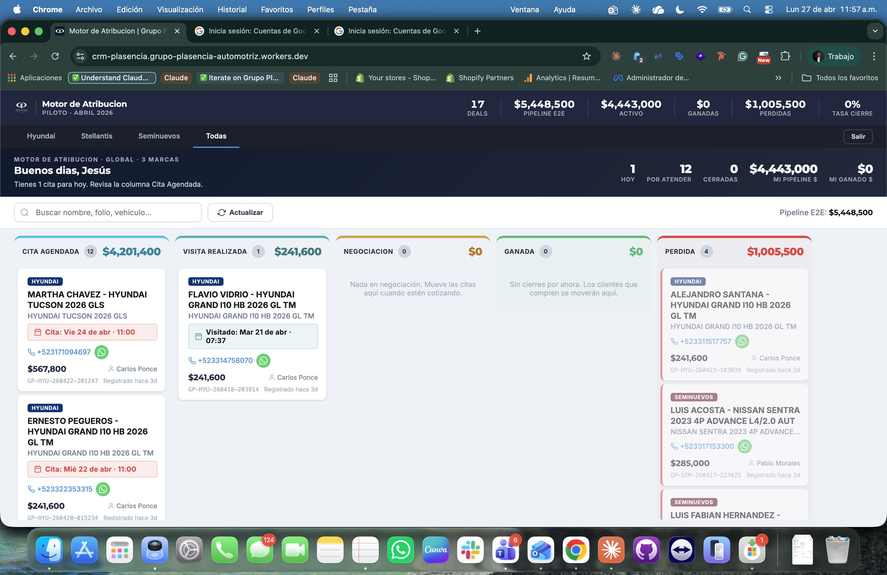
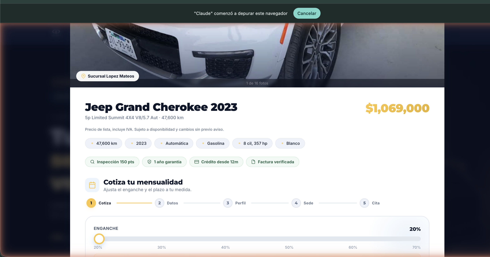

Lo que construí en mis primeras semanas
de mandato a piloto
producción
desde GO-LIVE
(MXN)
el grupo
- Reuniones con 8 marcas, agencias, vendedores
- Análisis del legacy del director anterior
- Diagnóstico de tracking (33% atribución, fragmentado)
- Mapeo de 41 agencias / 61 personas MKT
- Alcance: 3 marcas piloto (Sem · Hyu · STL)
- Diseño del ecosistema digital del grupo (v1 con SaaS + server-side)
- Negociación bottom-up con marcas: $30K/mes c/u
- Acuerdo con Contraloría + agencia de medios
- 3 SPAs mobile-first (UX/UI/FE con IA)
- Airtable 12 tablas + Zapier 4 Zaps + Worker proxy
- GTM v8 + GA4 (3 props) + Meta Pixel (3 pixels)
- Validación Legal + SEO + Design System multi-marca
- Onboarding 13 vendedores + capacitación inicial
- Tráfico de prospección encendido
- Primer lead real esa misma tarde
- Hyu+STL activan los días siguientes
- 14 oportunidades / $90K matched (día 7)
- Triplicación bug detected + fixed
- Iteraciones UX/UI 19 commits
- Sospecha de auditabilidad limitada de v1
- 24h cutover: D1 + Worker + CAPI/MP server-side
- Cleanup completo Airtable + Zapier
- 17 citas agendadas / $5.45M MXN pipeline acumulado
- Glosario consensuado / pausa intencional Hyu+STL


/api/lead/:marca con hashing PII server-side y log lead_intake_log.| Marzo 2026 | $100 USD Claude Code | (yo lo pagué de mi bolsa al entrar al grupo) |
| Abril 2026 | $100 + $60 + $29 = $189 USD | (Claude Code + Zapier + Airtable, ya con tarjeta corporativa) |
| Mayo en adelante | $100 USD/mes | (solo Claude Code — v2 eliminó Zapier+Airtable) |
| Total infra al 27 abril | $289 USD ≈ $5,800 MXN |
$0 en consultoría tech.
$0 en diseño de producto externo.
$0 en equipo interno adicional.
+ mi sueldo (por debajo de mercado para Director de MKT Corporativo).
| Marca | Cita Ag. | Visita | Negoc. | Ganada | Perdida | Total | Pipeline (MXN) | Gasto Meta | CPA / deal |
|---|---|---|---|---|---|---|---|---|---|
| Seminuevos | 10 | 0 | 0 | 0 | 3 | 13 | $4,155,900 | $6,333 | $487 |
| Hyundai | 2 | 1 | 0 | 0 | 1 | 4 | $1,292,600 | $3,559 | $890 |
| Stellantis | 0 | 0 | 0 | 0 | 0 | 0 | $0 | $1,330 | N/A |
| Total piloto | 12 | 1 | 0 | 0 | 4 | 17 | $5,448,500 | $11,222 | $660 |
| Agencia digital MKT (4 meses) | ~$100K MXN |
| Tech consultancy (CRM + integraciones) | ~$150K MXN |
| Diseño de producto (3 SPAs UX/UI) | ~$80K MXN |
| Equipo interno mínimo (PM + 2 devs, 4 meses) | ~$400K MXN |
| Total estimado | ~$730K MXN |
| Tiempo a producción | 4-6 meses |
| Claude Code (marzo + abril) | $200 USD ≈ $4,000 MXN |
| Zapier + Airtable (solo abril, ya retirado) | $89 USD ≈ $1,800 MXN |
| Agencias / consultoría / diseño | $0 |
| Equipo dedicado (PM/devs/UX) | $0 |
| Total real al 27 abril | ~$5,800 MXN |
| Tiempo a producción | 4 semanas |
¿qué tan rápido podemos ir si la alineación viene de arriba?
una Dirección de Marketing corriendo como
Revenue y Profit Center, no como Cost Center.
(mandato → hoy)
el GO-LIVE
en producción
en infraestructura
MVP · producto funcional con lo mínimo necesario para validar la hipótesis.
Deal / Oportunidad · cita pre-agendada con cotización completa (vehículo, precio, enganche, mensualidad, plazo, tipo de persona). ≠ Lead.
Lead · contacto inicial sin cotización ni contexto. Solo nombre + dato de contacto.
Pipeline · conjunto de deals/oportunidades en proceso, valuados en MXN.
CPA · Cost Per Acquisition · gasto en publicidad ÷ deals generados.
e2e · end-to-end · de punta a punta del proceso.
SPA · Single Page Application · web app interactiva en una sola URL, navegación instantánea.
Server-side · ejecutado en servidor (no en navegador). Garantiza datos sin pérdida.
Cloudflare · proveedor de infraestructura cloud que ofrece Workers (código), D1 (base de datos), CDN. Free tier para volumen del piloto.
Worker / Cloudflare Worker · código que corre en servidores cerca del usuario.
D1 · base de datos en Cloudflare.
Zapier · plataforma SaaS que automatiza flujos entre apps sin código (si pasa X en una app, haz Y en otra).
Airtable · base de datos colaborativa con interfaz tipo hoja de cálculo. Sirve para almacenar registros (leads, pipeline) con vistas y filtros.
Webhook · mecanismo donde una app envía datos a otra cuando ocurre un evento (ej. envío de un formulario).
GitHub Pages · servicio gratuito de GitHub para alojar sitios web estáticos directamente desde un repositorio.
CAPI · Conversion API · canal directo del servidor a Meta/Google. Recupera ~40% de eventos perdidos vs Pixel.
GA4 MP · Google Analytics 4 Measurement Protocol · API server-side a Google.
GTM · Google Tag Manager · administrador de etiquetas de tracking.
Pixel · código de Meta/Google que rastrea acciones del usuario en navegador (lado cliente).
Andromeda · sistema de optimización de Meta Ads (2024-2025) que sustituye segmentación tradicional por señales.
Always-on · publicidad continua, no por ráfagas.
BAU · Business as Usual · operación normal habitual.
OEM · Original Equipment Manufacturer · las marcas de auto (Mazda, Hyundai, Stellantis, Ford...).
Click-to-Message · ad de Meta cuyo CTA abre WhatsApp directamente.
Leadgen Native Form · formulario dentro de Facebook/Instagram con autofill.
Cross-brand · cliente que ha comprado en múltiples marcas del grupo.
Costo hundido (sunk cost) · inversión gastada que no produce retorno.
MOAT · "foso defensivo" · ventaja competitiva sostenible y difícil de replicar.
RevOps · Revenue Operations · estructura donde Marketing + Ventas + Data trabajan bajo una misma dirección con métricas compartidas.
Cost Center · área de gasto que se mide por actividades reportadas.
Revenue Center · área medida por ingresos generados.
Profit Center · área medida por margen sobre el gasto.
Top-down · decisiones desde arriba (Consejo) hacia abajo.
Bottom-up · decisiones construidas desde la base (operativo) hacia arriba.
Design Thinking · metodología de diseño centrado en usuario con 3 lentes (deseabilidad / viabilidad / factibilidad).
Growth / Lean Startup · probar pequeño, validar, escalar (modelo del piloto).